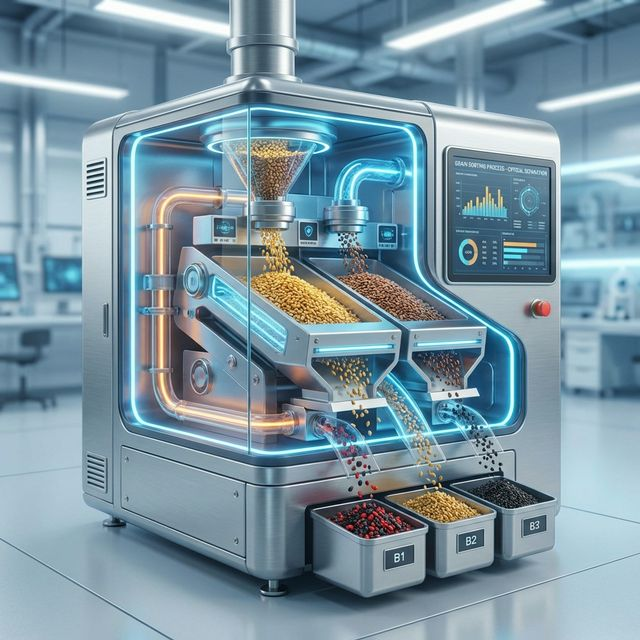

Ever wondered how we ensure every single grain in your PureAmrut packet is perfect? It's not just manual checking; it's a rigorous, multi-stage scientific process involving state-of-the-art machinery. Here is how we guarantee purity.
The raw harvest first goes through large sieves which remove large foreign particles like stalks, mud balls, and larger stones. This initial separation is crucial for preparing the grain for finer cleaning.
Grains pass through a Destoner machine that uses specific gravity to separate stones that are the same size as the grains. Since stones are heavier, they are separated by air vibration, ensuring no physical impurities remain.
This is where technology shines. Our Sortex machines use high-speed cameras to inspect every individual grain. If a grain is discolored, black, or damaged, a jet of air instantly shoots it out of the stream. Only grains with the perfect color and shape make it through.
By combining traditional knowledge with modern sorting technology, PureAmrut ensures that you don't pay for impurities—you pay only for the finest quality grains.